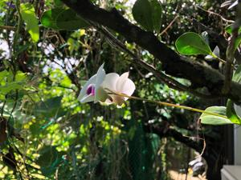
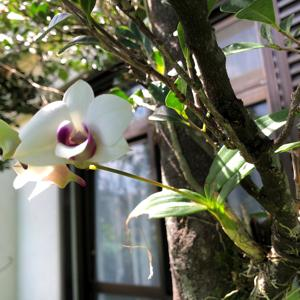

うるがいの話 ある日
最新: 伴走
うるがいとは 前提知識です
カニの画像をクリックすると『うるがいの話』サイトを表示します
うるがい(ｳﾙｶﾞｲ urugai)とは、『もずくがに』の名前でとても大きくなります。
たながー（ﾀﾅｶﾞｰtanagaa）とは手長えびのことで、何種類かあり大きいのは車 エビぐらいになります。
ぶながー(bunagaa)とは、赤い髪の毛、赤い身体、そして身長は１ｍ２０ｃｍ ぐらい、川の蟹を食べているの目撃された。場所は沖縄県国頭郡大宜味村のと ある村僕の隣近所に住んでいる爺さんから、聞いた話です。
2021年09月06日 (月）
伴走
16:37


コドモが、『絆 2021 ON-LINE NAHAマラソン ラン＆ウォーク』に申し込ん
だよ、フルマラソンを普通に一日で走るので、中間地点でドリンクをお願いと
言われた。やる気満々である、バイクで応援するヨと答える。途中、走れなく
なったら後部座席に乗せるし！と。
パラオリンピックで女子マラソン（視覚障害）で金をタイムは3時間0分50秒
で優勝している。視覚障害の人達が伴走で走っている横を、ナハマラソンで何
度か一緒に走った。目が見えないのに走っている人、その人を支えるために伴
走している人、毎度スゴイ人達がいると感じながら走った。閉会式の最後の曲
は良かった。私が好きな曲である、そのうちギターで弾いてみるかとネットで
検索する。
『guitar tab What a wonderful world』
、無理！無理！、なんな
んだギターコードに／（分数コードと言うらしい）がある。ま、望めばいつか
は叶えられるとアスリート達は言っていたし。